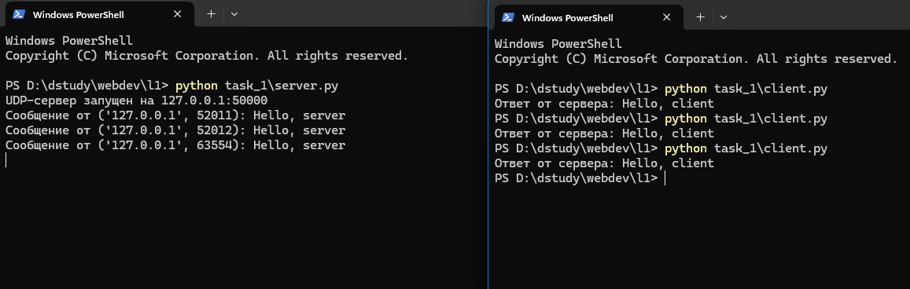
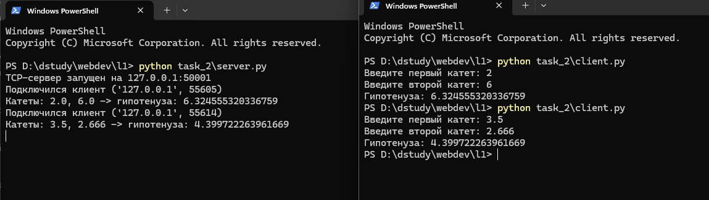
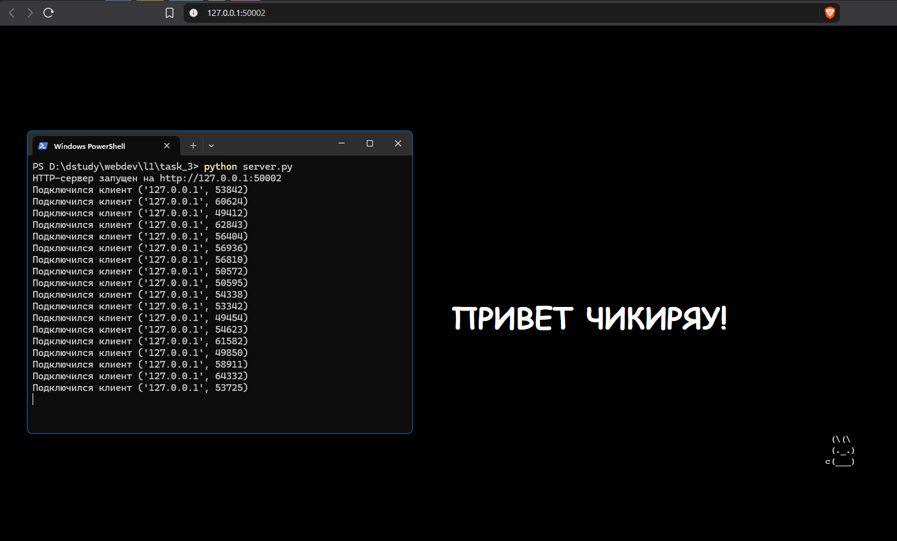
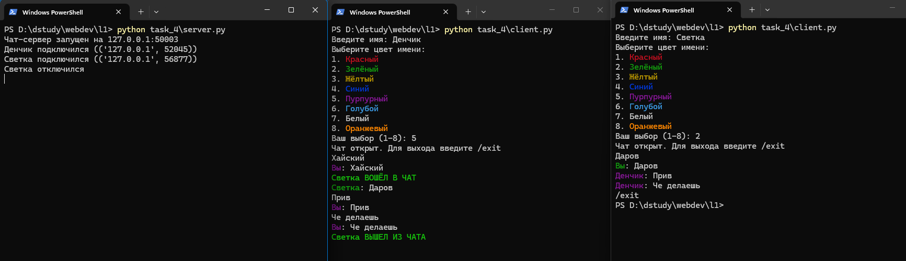
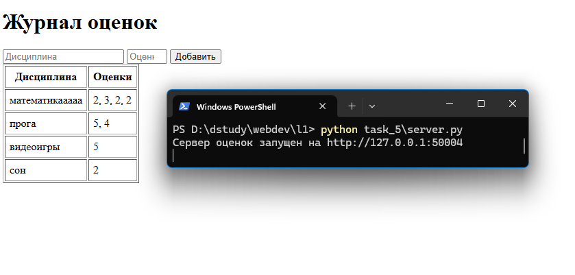

ЛР1. Работа с сокетами
Цель работы
Понять принципы взаимодействия сокетов в вебе и реализовать базовую архитектуру клиент-сервер на Python с использованием только стандартной библиотеки socket (и threading там, где это требуется). Я сделал пять практических заданий: обмен сообщениями по UDP, TCP-калькулятор, раздача HTML-страницы по HTTP вручную, многопользовательский чат на потоках и веб-сервер оценок с ручной обработкой GET/POST-запросов.
Мой номер в журнале 17, вариант считается как (17 - 1) mod 4 + 1 = 1, поэтому во втором задании я реализовал теорему Пифагора.
Про все серверы сразу: сначала у меня бесконечный цикл while True: server.accept() (или recvfrom()) на Windows плохо останавливался по Ctrl+C. Интерпретатор проверяет прерывание только между инструкциями, а пока висит блокирующий системный вызов, управление к нему не возвращается. Поэтому во все пять серверов я добавил server.settimeout(0.5): сокет ждёт подключение или пакет максимум полсекунды, потом вылетает socket.timeout, и цикл идёт на следующую итерацию. Так интерпретатор регулярно получает управление и успевает заметить Ctrl+C. Логика обработки данных от этого не поменялась.
Задача 1. Обмен сообщениями по UDP
Протокол
UDP это протокол без установления соединения. Клиент отправляет датаграмму через sendto(), не дожидаясь подтверждения от сервера, а сервер получает её вместе с адресом отправителя через recvfrom() и отвечает на этот же адрес. Никакого рукопожатия здесь нет: если сервер не запущен, клиент об этом узнает не сразу, а только при попытке получить ответ.
Код сервера
import socket
HOST = "127.0.0.1"
PORT = 50000
server = socket.socket(socket.AF_INET, socket.SOCK_DGRAM)
server.bind((HOST, PORT))
server.settimeout(0.5) # чтобы recvfrom() не блокировал Ctrl+C навсегда
print(f"UDP-сервер запущен на {HOST}:{PORT}")
try:
while True:
try:
data, address = server.recvfrom(1024)
except socket.timeout:
continue
print(f"Сообщение от {address}: {data.decode()}")
server.sendto("Hello, client".encode(), address)
except KeyboardInterrupt:
print("\nСервер остановлен")
finally:
server.close()
Код клиента
import socket
HOST = "127.0.0.1"
PORT = 50000
client = socket.socket(socket.AF_INET, socket.SOCK_DGRAM)
client.sendto("Hello, server".encode(), (HOST, PORT))
data, address = client.recvfrom(1024)
print(f"Ответ от сервера: {data.decode()}")
client.close()
Пример работы

Рис. 1. Сервер принимает "Hello, server" от трёх последовательных запусков клиента и каждый раз отвечает "Hello, client"
Я запустил клиент три раза подряд. Каждый раз ОС давала ему новый случайный порт, потому что явного bind() у клиента нет (в логе сервера видно три разных порта). Сервер всё это время работал в одном процессе и отвечал на каждое сообщение.
Задача 2. TCP-калькулятор: теорема Пифагора (вариант 1)
Протокол
В отличие от UDP, TCP требует установления соединения. Сервер вызывает listen() и блокируется на accept() в ожидании подключения; клиент вызывает connect(), после чего между сторонами открывается двусторонний канал recv()/send(), не требующий передавать адрес при каждом обмене. Протокол обмена простой текстовый: клиент шлёт строку "a b" (два катета через пробел), сервер парсит её, считает гипотенузу по теореме Пифагора и возвращает результат тоже строкой.
Код сервера
import socket
import math
HOST = "127.0.0.1"
PORT = 50001
server = socket.socket(socket.AF_INET, socket.SOCK_STREAM)
server.bind((HOST, PORT))
server.listen(1)
server.settimeout(0.5) # чтобы accept() не блокировал Ctrl+C навсегда
print(f"TCP-сервер запущен на {HOST}:{PORT}")
try:
while True:
try:
conn, address = server.accept()
except socket.timeout:
continue
print(f"Подключился клиент {address}")
data = conn.recv(1024).decode()
a, b = map(float, data.split())
c = math.sqrt(a ** 2 + b ** 2)
print(f"Катеты: {a}, {b} -> гипотенуза: {c}")
conn.send(str(c).encode())
conn.close()
except KeyboardInterrupt:
print("\nСервер остановлен")
finally:
server.close()
Код клиента
import socket
HOST = "127.0.0.1"
PORT = 50001
a = float(input("Введите первый катет: "))
b = float(input("Введите второй катет: "))
client = socket.socket(socket.AF_INET, socket.SOCK_STREAM)
client.connect((HOST, PORT))
client.send(f"{a} {b}".encode())
data = client.recv(1024).decode()
print(f"Гипотенуза: {data}")
client.close()
Пример работы

Рис. 2. Два последовательных запуска клиента: катеты 2 и 6 дают гипотенузу 6.324555320336759, катеты 3.5 и 2.666 дают 4.399722263961669
После ответа сервер закрывает соединение (conn.close()) и возвращается к accept(), так что клиентов можно обслуживать по очереди сколько угодно. На скриншоте второй запуск клиента отработал сразу после первого, сервер я не перезапускал.
Задача 3. Раздача index.html по HTTP
Протокол
HTTP-ответ это обычный текст по строгому формату: строка статуса, заголовки, пустая строка-разделитель и тело. Библиотеки вроде http.server я не использовал, ответ собираю вручную и отправляю через тот же TCP-сокет, что принял подключение. По заданию в ответе должен быть заголовок Content-Length: по нему клиент знает, сколько байт тела ему ждать.
Код сервера
import socket
HOST = "127.0.0.1"
PORT = 50002
server = socket.socket(socket.AF_INET, socket.SOCK_STREAM)
server.bind((HOST, PORT))
server.listen(1)
server.settimeout(0.5) # чтобы accept() не блокировал Ctrl+C навсегда
print(f"HTTP-сервер запущен на http://{HOST}:{PORT}")
try:
while True:
try:
conn, address = server.accept()
except socket.timeout:
continue
print(f"Подключился клиент {address}")
request = conn.recv(1024) # запрос браузера не нужен, просто вычитываем его
with open("index.html", "rb") as file:
body = file.read()
headers = (
"HTTP/1.1 200 OK\r\n"
"Content-Type: text/html; charset=utf-8\r\n"
f"Content-Length: {len(body)}\r\n"
"\r\n"
).encode()
conn.sendall(headers + body)
conn.close()
except KeyboardInterrupt:
print("\nСервер остановлен")
finally:
server.close()
Файл index.html я открываю в бинарном режиме ("rb"), чтобы его байты можно было напрямую склеить с байтами заголовков через + без дополнительного кодирования.
Пример работы

Рис. 3. Слева лог сервера с множеством подключений от одной и той же вкладки браузера, справа отрисованная страница
В логе много строк Подключился клиент подряд: каждое обновление страницы (F5) открывает новое TCP-соединение и новый accept(), сервер обрабатывает их по одному.
Задача 4. Многопользовательский чат
Протокол и архитектура
Это первая задача, где сервер должен обслуживать несколько клиентов одновременно, а не по очереди. Для этого я использовал threading: на каждое подключение, принятое в главном потоке через accept(), создаётся отдельный поток handle_client, который дальше общается только со своим клиентом. Пока один поток висит на conn.recv() и ждёт сообщение от своего пользователя, главный поток уже снова стоит на accept() и может принять следующего.
Все подключённые клиенты хранятся в общем списке clients, это список кортежей (conn, имя, цвет). Его меняют разные потоки (кто-то заходит, кто-то выходит), поэтому доступ к нему я обернул в threading.Lock. Без него поток рассылки (broadcast) мог бы идти по списку в тот момент, когда другой поток добавляет или удаляет клиента. Тогда рассылка могла бы пропустить кого-то или попытаться отправить сообщение в уже закрытый сокет. Сами append и remove под GIL выполняются целиком, но GIL не защищает весь проход «прочитать список → разослать всем», поэтому нужен Lock.
Протокол общения текстовый. Сразу после подключения клиент шлёт строку "имя|номер_цвета", а дальше обычные текстовые сообщения, пока не пришлёт /exit.
Раскраска имён
Я решил дополнительно различать пользователей по цвету: при входе в чат клиент выбирает один из 8 цветов для имени через простое текстовое меню (1-8), а сервер хранит выбранный ANSI-код вместе с именем и подставляет его в каждое сообщение от этого пользователя. Сделал это через escape-последовательности терминала (\033[31m и подобные: 7 стандартных цветов ANSI + один 256-цветный код для оранжевого), без сторонних библиотек вроде colorama. Мне хотелось обойтись одной стандартной библиотекой, тем более что современные терминалы (Windows Terminal, PowerShell 7+) понимают ANSI-коды из коробки.
Ещё я выделил системные сообщения о входе и выходе капсом и жирным (\033[1m вместе с цветом), чтобы их было видно среди обычных реплик. Свои сообщения клиент подписывает как Вы: <текст> своим цветом, иначе среди чужих реплик непонятно, что написал ты сам.
Код сервера
import socket
import threading
HOST = "127.0.0.1"
PORT = 50003
COLORS = {
"1": "\033[31m", # красный
"2": "\033[32m", # зелёный
"3": "\033[33m", # жёлтый
"4": "\033[34m", # синий
"5": "\033[35m", # пурпурный
"6": "\033[36m", # голубой
"7": "\033[37m", # белый
"8": "\033[38;5;208m", # оранжевый
}
RESET = "\033[0m"
BOLD = "\033[1m"
clients = [] # список кортежей (conn, имя, цвет)
clients_lock = threading.Lock()
def broadcast(message, sender_conn):
with clients_lock:
for conn, name, color in clients:
if conn is not sender_conn:
conn.send(message.encode())
def handle_client(conn, address):
name, color_num = conn.recv(1024).decode().split("|")
color = COLORS.get(color_num, RESET)
with clients_lock:
clients.append((conn, name, color))
print(f"{name} подключился ({address})")
broadcast(f"{BOLD}{color}{name} ВОШЁЛ В ЧАТ{RESET}", conn)
while True:
data = conn.recv(1024).decode()
if not data or data == "/exit":
break
broadcast(f"{color}{name}{RESET}: {data}", conn)
with clients_lock:
clients.remove((conn, name, color))
print(f"{name} отключился")
broadcast(f"{BOLD}{color}{name} ВЫШЕЛ ИЗ ЧАТА{RESET}", conn)
conn.close()
server = socket.socket(socket.AF_INET, socket.SOCK_STREAM)
server.bind((HOST, PORT))
server.listen()
server.settimeout(0.5) # чтобы accept() не блокировал Ctrl+C навсегда
print(f"Чат-сервер запущен на {HOST}:{PORT}")
try:
while True:
try:
conn, address = server.accept()
except socket.timeout:
continue
thread = threading.Thread(target=handle_client, args=(conn, address), daemon=True)
thread.start()
except KeyboardInterrupt:
print("\nСервер остановлен")
finally:
server.close()
Потоки клиентов я создаю с daemon=True: если основной процесс сервера завершится (например, по Ctrl+C), они закроются вместе с ним, даже если в этот момент ждут conn.recv() от молчащего пользователя.
Код клиента
Клиент один, его просто запускают несколько раз отдельными процессами для разных пользователей. Отдельных файлов под каждого клиента нет.
import socket
import threading
HOST = "127.0.0.1"
PORT = 50003
COLORS = {
"1": ("Красный", "\033[31m"),
"2": ("Зелёный", "\033[32m"),
"3": ("Жёлтый", "\033[33m"),
"4": ("Синий", "\033[34m"),
"5": ("Пурпурный", "\033[35m"),
"6": ("Голубой", "\033[36m"),
"7": ("Белый", "\033[37m"),
"8": ("Оранжевый", "\033[38;5;208m"),
}
RESET = "\033[0m"
def choose_color():
print("Выберите цвет имени:")
for number, (title, color) in COLORS.items():
print(f"{number}. {color}{title}{RESET}")
while True:
choice = input("Ваш выбор (1-8): ")
if choice in COLORS:
return choice
print("Нет такого номера, попробуйте ещё раз")
def receive_messages(sock):
while True:
try:
data = sock.recv(1024).decode()
except OSError:
break # сокет закрыли из основного потока после /exit
if not data:
print("Соединение с сервером закрыто")
break
print(data)
name = input("Введите имя: ")
color_num = choose_color()
my_color = COLORS[color_num][1]
client = socket.socket(socket.AF_INET, socket.SOCK_STREAM)
client.connect((HOST, PORT))
client.send(f"{name}|{color_num}".encode())
thread = threading.Thread(target=receive_messages, args=(client,), daemon=True)
thread.start()
print("Чат открыт. Для выхода введите /exit")
while True:
text = input()
client.send(text.encode())
if text == "/exit":
break
print(f"{my_color}Вы{RESET}: {text}")
client.close()
Клиенту тоже нужен отдельный поток (receive_messages), иначе он не смог бы одновременно ждать ввода в input() (блокирующий вызов) и получать сообщения от сервера. Приём я обернул в try/except OSError: при /exit главный поток закрывает сокет, а поток приёма в этот момент может ещё стоять на recv(). Тогда recv() падает с исключением, и его надо просто поймать, чтобы в консоль не вылетал traceback.
Пример работы

Рис. 4. Три окна: лог сервера, клиент "Денчик" (пурпурный) и клиент "Светка" (зелёный)
Сервер печатает подключение обоих пользователей, а после выхода Светки её отключение. Денчик зашёл первым и написал "Хайский", когда в чате ещё никого не было, поэтому Светка это сообщение не получила. Потом в терминале Денчика видно вход Светки капсом и жирным зелёным (Светка ВОШЁЛ В ЧАТ), а дальше переписка "Даров"/"Прив"/"Че делаешь": свои сообщения подписаны "Вы:", у чужих цветное имя. В конце тем же стилем выводится её выход (Светка ВЫШЕЛ ИЗ ЧАТА). У Светки /exit завершает только её клиент, чат Денчика продолжает работать.
Задача 5. Веб-сервер оценок (GET/POST)
Протокол
В отличие от задачи 3, здесь сервер не просто отдаёт статику, а разбирает HTTP-запрос вручную: из первой строки ("GET / HTTP/1.1" или "POST / HTTP/1.1") достаются метод и путь, а для POST дополнительно читается заголовок Content-Length и по нему тело запроса. Тело в формате application/x-www-form-urlencoded (как у обычной HTML-формы) разбирается через urllib.parse.parse_qs из стандартной библиотеки. Она сама делает URL-декодирование и разбивает параметры по & и =, так что вручную мне это писать не пришлось.
Оценки я храню в dict: ключ это дисциплина, значение это список оценок по ней (grades.setdefault(discipline, []).append(grade)). Так оценки сразу группируются по дисциплине, а не пишутся построчным логом.
Код сервера
import socket
import urllib.parse
HOST = "127.0.0.1"
PORT = 50004
grades = {} # дисциплина -> список оценок
def render_page():
rows = ""
for discipline, marks in grades.items():
marks_str = ", ".join(marks)
rows += f"<tr><td>{discipline}</td><td>{marks_str}</td></tr>"
return f"""<!DOCTYPE html>
<html lang="ru">
<head><meta charset="UTF-8"><title>Журнал оценок</title></head>
<body>
<h1>Журнал оценок</h1>
<form method="POST" action="/">
<input type="text" name="discipline" placeholder="Дисциплина" required>
<input type="number" name="grade" placeholder="Оценка" min="2" max="5" required>
<button type="submit">Добавить</button>
</form>
<table border="1" cellpadding="6">
<tr><th>Дисциплина</th><th>Оценки</th></tr>
{rows}
</table>
</body>
</html>"""
server = socket.socket(socket.AF_INET, socket.SOCK_STREAM)
server.bind((HOST, PORT))
server.listen()
server.settimeout(0.5) # чтобы accept() не блокировал Ctrl+C навсегда
print(f"Сервер оценок запущен на http://{HOST}:{PORT}")
try:
while True:
try:
conn, address = server.accept()
except socket.timeout:
continue
request = conn.recv(1024).decode()
if not request:
conn.close()
continue
first_line = request.split("\r\n")[0]
method, path, _ = first_line.split(" ")
if method == "POST":
headers_part, _, body = request.partition("\r\n\r\n")
content_length = 0
for line in headers_part.split("\r\n")[1:]:
if line.lower().startswith("content-length"):
content_length = int(line.split(":")[1].strip())
while len(body.encode()) < content_length:
body += conn.recv(1024).decode()
params = urllib.parse.parse_qs(body)
discipline = params["discipline"][0]
grade = params["grade"][0]
grades.setdefault(discipline, []).append(grade)
body_html = render_page().encode()
headers = (
"HTTP/1.1 200 OK\r\n"
"Content-Type: text/html; charset=utf-8\r\n"
f"Content-Length: {len(body_html)}\r\n"
"\r\n"
).encode()
conn.sendall(headers + body_html)
conn.close()
except KeyboardInterrupt:
print("\nСервер остановлен")
finally:
server.close()
Тело дочитывается в цикле while len(body.encode()) < content_length, потому что один recv() не обязан вернуть весь запрос сразу: TCP может доставить данные несколькими кусками, особенно если тело больше буфера.
Пример работы

Рис. 5. Форма добавления оценки и итоговая таблица с четырьмя дисциплинами
Через форму я добавил оценки по нескольким дисциплинам: «математикаааа»: 2, 3, 2, 2; «прога»: 5, 4; «видеоигры»: 5; «сон»: 2. Каждая дисциплина занимает одну строку таблицы, оценки перечислены через запятую, то есть группировка дисциплина: [оценки] работает.
Выводы
В этой работе я сделал пять заданий по сокетам на Python только на стандартной библиотеке (socket, threading, urllib.parse). На задачах 1-3 видна разница между UDP (без соединения) и TCP (с соединением), а также то, что HTTP-ответ можно собрать руками поверх обычного TCP-сокета. В задаче 4 мне пришлось перейти от обслуживания клиентов по очереди к параллельному через threading и защищать общий список клиентов через Lock. Чат получился многопользовательский: пользователи различаются по имени (и по выбранному цвету), выйти можно командой /exit. В задаче 5 HTTP-запрос разбирается вручную (метод, путь, тело POST по Content-Length), а оценки хранятся сгруппированными по дисциплине.
Ещё на всех пяти серверах мне пришлось решать проблему с остановкой: блокирующие accept()/recvfrom() на Windows плохо прерывались по Ctrl+C, поэтому я добавил таймаут сокета и обработку socket.timeout в цикле приёма.